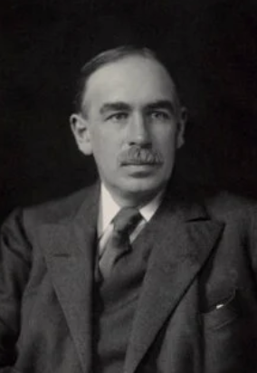
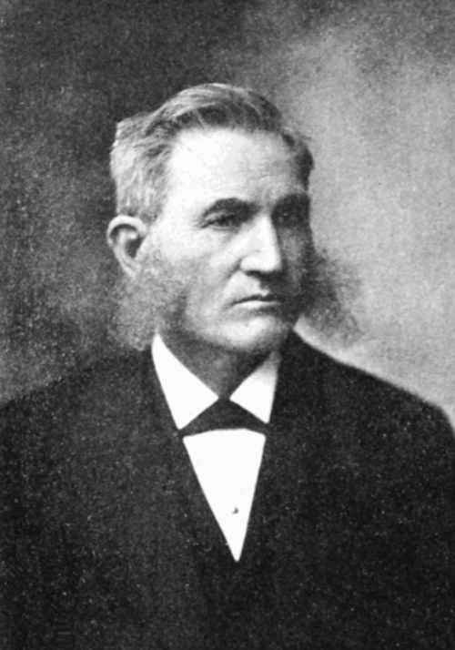
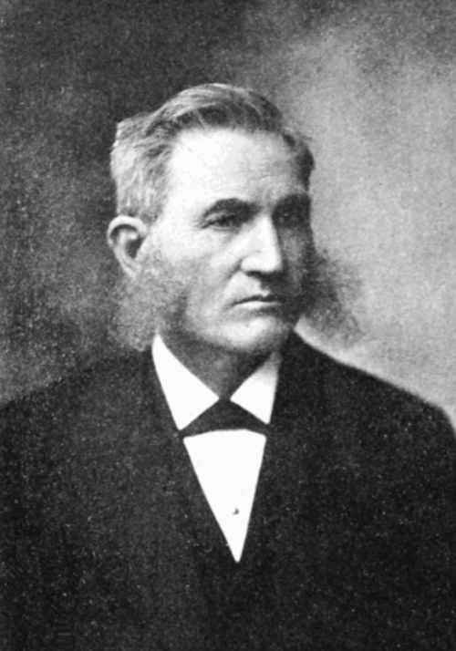

Analyzing the Interconnected Intellectual Networks of B.R. Ambedkar's
Problem of the Rupee
Durga Rajiv Chaloli & Isha Karim
Project research method: Ambedkar is often recognized as a radical anti-caste thinker, an active constitutional lawyer, and the father of India's constitution. He indeed is all of this and more, but recognizing Ambedkar's pedagogical formation as political economist is often overlooked, and his anti-caste thought is used as a way to pin him down as a “colonial stooge.” We use Ambedkar's 1923 LSE thesis Problem of the Rupee, as a way to situate Ambedkar as a political economist and at the same time to revitalize his anti-colonial thought. We then identify the Problem of the Rupee (and Ambedkar's political economic thought) as a work that is situated at the nexus of overlapping and diverse intellectual networks and modes of thinking—spheres inhabited by the colonial bureaucrat as the political economist, by the economic feminist engaging with questions of surplus, and by the early-20th century US university intellectual embedded in the question of the eminent domain.
The project of annotation resembles the excavation of an artefact, wherein we uncover new and surprising nformation and connections as we (re)read. These modes of presentation (static slides and interactive website) were produced with the following questions in mind: Who gets to annotate? Who gets to read these texts? As public pedagogues, we simultaneously engage in both knowledge dissemination and selection. How can we blur the lines separating the “public” and the “pedagogue,” and make an act as personal, intimate, and solitary as close-reading and annotation a one that is inherently shared, collective, and interactive? We do this by offering a bi-dimensional, multimodal, and immersive reading and annotational experience. We have a website interface that gamifies, simplifies, and makes interactive the process of reading through and annotating a dense treatise like PoR. We also have this slide deck which is a static, more detailed version of our annotations, that a more interested reader can go through.
1. What “immediate” and “alternative” intellectual networks did Problem of the Rupee engage with?
“On both sides of the Atlantic a new world of coal and iron, factory towns and sprawling urban agglomerations, accumulated capital, massed wage labor, and new forms of misery was swiftly coming into being. [...] The birthplace of this new world was Britain. [...] The nations of the North Atlantic economy vied for markets with fierce intensity, manipulating trade and tariff policies or grabbing for captive colonial markets in an effort to leapfrog past each other in industrial primacy. Still, to focus on the nation-state is to distort the fundamental forces at work. Slipping across national borders with the fluidity of quicksilver, investment capital and management and roduction techniques diffused through the avenues of North Atlantic trade. By the late nineteenth century, what struck those who traversed the industrial regions of the Old and New Worlds was not their difference but their extraordinary sameness."
Well, what of the subaltern political economist, making similar Atlantic Crossings, but salvaging the colonial periphery from the shadows of the North Atlantic “epistemic core” and theorizing about extractive colonial economy from the margins?
Ambedkar, through his 1923 Problem of the Rupee which he writes after “crossing over” from Columbia to LSE, is taking on the protean “thinker-practitioners” John Maynard Keynes, Fred J. Atkinson, David Miller Barbour, and others who are all colonial bureaucrats/ administrators in the British Indian colonial periphery and political economic knowledge producers in the colonial metropole (London).
It is important to identify how these colonial bureaucrats were theorizing colonial monetary policy and “underdevelopment” as they shuttled between the subaltern periphery and the colonial metropole.

"The United States were urged to abandon the silver, and no consideration appears to have been given to the difficulties that such a measure must bring on India. Some writers were indeed good enough to suggest that while the United States and all the great and wealthy nations of the world might select silver as their monetary standard: as I shall show hereafter, any such settlement of the question was impracticable, and if it could have been achieved it would have proved neither satisfactory nor permanent. Gentlemen, we are accustomed to pride ourselves on the fact that we are an Imperial people, and with Imperial instincts. It seems to me that there was very little of the Imperial spirit shown in the way in which we dealth either with the Currency Question as a whole, or with that portion of it which more immediately concerned India."
This letter is from the publisher of Edwin Cannan's (Ambedkar's PoR-preface writer, LSE prof's) book "The Economic Outlook," and it claims that Seligman and Columbia appear to have a known interest in Cannan's work. The fact that Seligman is taking interest in Cannan's work in 1913—when Ambedkar is studying at CU and certainly thinking about his eventual thesis—shows that through Seligman, Ambedkar seems to have been begun engaging with the economists he takes issue with eventually in PoR.
"The Economic Outlook" is a compilation of essays that were initially written to create a general "manual" on Political Economy that also engaged with concepts of socialism. Importantly, there are three chapters titled "The practical utility of economic science," that is immediately followed by "colonial preference," and then eventually, "the economic ideal and its application to countries or nations." This is the book referenced in the letter.
How does Ambedkar—through PoR—take on and subvert the narrative of colonial monetary “underdevelopment” crafted by the the protean colonial bureaucrats/political economists (Keynes, Barbour, Atkinson, etc.)?
"On the theoretical side there is no book but that of Professor Keynes which makes any attempt to examine its scientific basis. But the conclusions he has arrived at are in sharp conflict with those of mine. Our differences extend to almost every proposition he has advanced in favour of the exchange standard. This difference proceeds from the fundamental fact, which seems to be quite overlooked by Professor Keynes, that nothing will stabilise the rupee unless we stabilise its general purchasing power. That the exchange standard does not do. That standard concerns itself only with symptoms and does not go to the disease: indeed, on my showing, if anything, it aggravates the disease." - Ambedkar, Problem of the Rupee vi.
"The present Indian system has close affinities with other currency systems in some of the great European countries and elsewhere. To get an idea as to what these affinities are, or rather were, we must look into Chapter II of Mr. Keynes's interesting treatise on Indian Currency and Finance. In that treatise of his, Mr. Keynes has attempted to show that there is a fundamental likeness between the operations of the Indian currency system and the operations as they used to be of the central banks of some of the important countries of Europe. He found that it used to be the practice of these banks
to hold foreign bills of exchange for the purpose of making remittances to foreign countries. Between the selling of such foreign bills and the selling of reverse councils by the Government of India he observed a closefundamental likeness, inasmuch as both involved. But, as Prof. Kemmerer points out, it is difficult to see what likeness there is between the Government of India selling reverse councils and the European banks holding foreign bills. Far from being alike, the two practices must be regarded as the opposite of each other.[...] Under the practice of holding foreign bills to protect the money market, the central bank sells its foreign bills, when money at home is relatively scarce, as means of
securing gold for importation or preventing its exportation. In the former case, the sale of drafts takes the place of an exportation of gold, and the resulting withdrawal of local money from circulation is in essentials an exportation ; in the latter case the sale of the drafts abroad is part of a process for securing gold for importation, or for preventing its exportation.The Indian currency system therefore bears no analogy to the European currency systems, as Mr. Keynes would have us believe. But if a parallel is needed, then the true parallel to the Indian system of currency is that system which prevailed in England during the Bank Suspension period (1797-1821)." - Ambedkar, Problem of the Rupee 172-3.
Who are the economic feminists? How do they operate in larger frameworks of pedagogical, professional, and political power?
How are Kelley's modes of knowledge production, economic and social ideology, and intellectual creed a counterpart for Ambedkar in Progressive Era America?
How do the economic feminists grapple with race? What new modes of scholarship and insight do they contribute to Black movements for enfranchisement?
 

How do the economic feminists “remodel” these Socialist terms and theories both under and sans the influence of their predominantly male mentors and contemporaries?
Terms: Exchange, exchange rate, surplus, overproduction, (labor) expropriation, invisible/visible labor, (labor & sexual) market, means of production, mechanisms of exchange
The pressure under which this is done is an economic one. The girl must marry: else how to live? The prospective husband...is the market, the demand. She is the supply. [...] The mother serves her child's economic advantage by preparing her for the market. It is plainly traceable to our sexuo-economic relation. The labor of women in the house, certainly, enables men to produce more wealth than they otherwise could; and in this way women are economic factors. The labor which the wife performs in the household is given as part of her functional duty, not as employment.
"[Women's] labor is neither given nor taken as a factor in economic exchange. In treating of an economic exchange, asking what return in goods or labor women make for the goods and labor given to them, either to the race collectively or to their husbands individually, what payment women make for their clothes and shoes and furniture and food and shelter, we are told that the duties and services of the mother entitle her to support. Industry, at its base, is a feminine function. The surplus energy of the mother does not manifest itself in noise, or combat, or display, but in productive industry. Because of her mother-power she became the first inventor and laborer; being in truth the mother of all industry as well as all people. [...] Man's entrance upon industry is late and reluctant; as will be shown later in treating his effect on economics. In this field of family life, his effect was as follows: Establishing the proprietary family at an age when the industry was primitive and domestic; and thereafter confining the woman solely to the domestic area, he thereby confined her to primitive industry. The domestic industries, in the hands of women, constitute a survival of our remotest past. Such work was "woman's work" as was all the work then known; such work is still considered woman's work because they have been prevented from doing any other. The term "domestic industry" does not define a certain kind of labor, but a certain grade of labor."
Against this backdrop of nascent American Socialism and women's emancipation, Florence Kelley becomes a key cross-Atlantic nd cross-class knowledge producer and mediator.
Kelley responds to a letter from Susan B. Anthony, who urges Kelley to encourage Kelley's father to give more attention to "Womens' Emancipation." Kelley argues her father is devoted to the cause in Pennysylvania, where "neither men nor women support him." Kelley cites her father as inspiration to her plans to devote herself to the "best interests of the working women of America."
The Kelley's have a long legacy of reform in America.
They fought in
the Revolutionary War,
and many of Kelley's great-aunts and grandmothers were among the
earliest American abolitionists.
In Notes of Sixty Years, she renews her steadfast belief in Quaker ethics and cites the religion
as incredibly formative to her future social work.
Florence Kelley attends
Cornell University
and writes her thesis on disadvantaged children.
She is refused admission to the law degree at the University of Pennysylvania due to her gender,
and instead attends the University of Zurich, the first European university to grant degrees to women, and joins
a student Socialist group.
Florence Kelley argues that the rise of the Socialist movement is 'so sudden' that it has an 'urgent' 'need of suitable literature,'indicating the urgency of translation work. She calls the American political machine corrupt with its lack of 'literature,' 'unenlightened leaders,' and 'capitalist press.' She then describes to Engels the 'organizing' movement of American trusts and determines the American bourgeois as without 'want of class consciousness.' According to her, this 'arouses further the class consciousness of the workers' although they remain unenlightened insofar as the 'best of our literature' is not available to the working lass of America. Kelley laments the absence of 'scientific literature' in America, alluding to her social work collecting economic data related to American women's and child labor.
Engels lends considerable influence to Kelley and her intellectual creed/methodology. Engels' description of England's advanced industrial capacity (taking the case of the industrial hubs Liverpool and Manchester), expansive proletariat, and undercurrent of class conflict along the axis of labor and wage strike a deep chord in Kelley's understanding of and ultimately contributions to American Socialism. In almost all her future social and economic work, Kelley will emulate the methodology adopted by Engels in Condition, of empirical data collection & organization as evidence for capitalism's disastrous excesses.
Kelley spends much of her time working on her translation of a "German Socialist" and the importance of the translation work to expand the "revolutionary" capacities of Americans and Europeans. In these letters, Kelley writes that "socialism is not dynamite warfare and the mightiest revolutions are peaceful ones." Kelley writes more to Lewis about her translation work and the burgeoning Socialist movement in America. She writes of the advances of social democracy in Switzerland and its elevated democratic character as compared to America (labor legislation, unionization, women's emancipation). Kelley extensively follows Socialist periodicals in America and Europe and criticizes the deliberate "dilutions" of Socialist thought by university intellectuals and the perversions of English translation of German works, where 'blind continue to lead the blind.' She believes such translations are dishonest and further cripple America's Socialist movement.
How does Problem of the Rupee (1923) engage with Marx's Free Trade (1848) and Engels' Condition (1844)? Can Kelley and her translations be cast as the mediating link between Problem of the Rupee and the Socialist texts that inspired Ambedkar?
"The explanation is that the actual exchange rates correspond to the purchasing power parities of two currencies not with regard to all commodities but with regard to some only. In this connection it is better to re-state the doctrine of the relation of the purchasing power parities to exchange rates with the necessary qualification. [...]the actual exchange rates are related to purchasing power parities of the two currencies with regard to such commodities only as are internationally traded. To assume that the actual exchange rate is an exact index of the purchasing power parity of the two currencies with regard to all the commodities is to suppose that the variations in [pg 253] the purchasing power of a currency over commodities which are traded and which are not traded are the same. [...] If this is true, then, although the maintenance of the exchange standard does imply a purchasing power parity of the rupee with gold, it is not a purchasing power parity of the two currencies with respect to all the commodities." - Ambedkar, Problem of the Rupee
"Not only had the trade of India been increasing, but the nature of her industries was also at the same time undergoing a profound change. Prior to 1870 India and England were, so to say, non-competing groups. Owing to the protectionist policy of the Navigation Laws, and owing also to the substitution of man by machinery in the field of production, India had become exclusively an agricultural and a raw-material-producing country, while England had transformed herself into a country which devoted all her energy and her resources to the manufacturing of raw materials imported from abroad into finished goods. [...] Along with this increase of resources the Government of India also exercised the virtue of economy in the cost of administration. For the first time in its history the Government turned to the alternative of employing the comparatively cheaper agency of the natives of the country in place of the imported Englishmen. [...] India, as was to be expected, hardly offered any market, the people being too poor and their savings too scanty to furnish a modicum of the required capital outlay. Like all Governments of poor peoples, the Government of India had therefore to turn to wealthier countries who had surplus capital to lend. All these countries unfortunately happened to be on the gold standard. " - Ambedkar, Problem of the Rupee
"By enabling people to buy foreign goods with foreign currency obtained at a cheaper price the peg virtually raises foreign prices more to the level of the home price so that if the exchange is stable it is not because there is a peg, but because the price-levels in the two countries have reached a new equilibrium. Essentially the exchange is stable because it is an artificial purchasing-power parity. Whether it will continue to be so depends upon the movements in the home prices. If the home prices rise more than the rise brought about by the peg in the foreign prices the mechanism must break. [...] In omitting to advert to that condition the Indian currency contradicts what is best in that Report of the Irish Committee. The reason why Mr. Lindsay paid no attention to the question of limitation in setting up his exchange standard is largely that, [...], he was profoundly ignorant of the true doctrine regarding the value of a currency." - Ambedkar, Problem of the Rupee
"By enabling people to buy foreign goods with foreign currency obtained at a cheaper price the peg virtually raises foreign prices more to the level of the home price so that if the exchange is stable it is not because there is a peg, but because the price-levels in the two countries have reached a new equilibrium. Essentially the exchange is stable because it is an artificial purchasing-power parity. Whether it will continue to be so depends upon the movements in the home prices. If the home prices rise more than the rise brought about by the peg in the foreign prices the mechanism must break. [...] In omitting to advert to that condition the Indian currency contradicts what is best in that Report of the Irish Committee. The reason why Mr. Lindsay paid no attention to the question of limitation in setting up his exchange standard is largely that, [...], he was profoundly ignorant of the true doctrine regarding the value of a currency." - Ambedkar, Problem of the Rupee
Thusfar, economic feminists have primarily engaged with questions of women, children, and the unequal valuation of their labor as it manifests in wage slavery and abysmal working conditions. We have seen how Ambedkar enters these conversations by virtue of a shared lexicon of ideas, terms, and theories. Although not an explicitly distinctive feature of Problem of the Rupee, a large corpus of Ambedkar's work dedicates itself to caste as a complex and trans-acting form of social stratification. Given the intellectual and professional focus of the economic feminists in America, how does racial stratification, discussed foremostly between Black and white people, figure in the work of the Ambedkar's “counterparts?” Do they similarly grapple with questions of social stratification beyond and including gender? Where do their practices diverge from Ambedkar's? How does this reveal the limits or lack thereof in their positionalities?
Mary White Ovington helps establish the Greenpoint Settlement House in NY, where she is deeply involved with civil rights and women's suffrage. She joins the Socialist Party in 1905. In 1909, Ovington joins with W.E.B du Bois, Ida B. Wells, John Dewey, Jane Addams, and Florence Kelley to form the NAACP and serves as its first executive secretary. In 1911, she publishes Half a Man: The Status of the Negro in New York City and describes the status of the “Negro” in New York City by examining the economic and social conditions, engaging with anthropological and ethnographic theories/methodologies to counter the prejudice that Black Americans were “inferior” and underscore the “burden” of racial segregation on Black communities. In "The Colored Woman as Breadwinner," Ovington specifically differentiates the socio-economic status of the “Negro laboring woman” from the “white laboring woman,” due to the “different occupational opporutnities” in “white and colored neighborhoods,” thus deeply interrogating the 1. intersections of labor, race, and sex and 2. the futile gains of (white) women's emancipation for Black women
Kelley receives a letter from USC professor Josiah Morse in March 1917, after Kelley become actively involved with the NAACP. Morse writes to Kelley to request more time with her to "discuss the Negro question." He disagrees with Kelley that the South cannot be "put in the same category as Russia." He then draws a multiple contrasting points between Southern lynchings and Russian pogroms, : rural vs. urban spaces, spur of the moment vs. premeditated violence, accusation of crime (as leading to lynching) vs. the absence of that practice in pograms, etc. Morse asks Kelley whether it is possible to improve the relationship between the "two races." He answers (hinting that Kelley agrees as well) that "pedagogy" or "statesmanship" is the solution. He then goes on to write that Black folk must cultivate character in order to work "with" white Southerners.
Daisly L. Bishop writes to Kelley asking for any work that Kelley may have for her. She writes admiringly of Kelley's work for Black folk in the United States. Bishop says that although she works in politics for "white Republicans," she and other Black folk are misused as political "tools" for political organizing efforts and fundraising but are left abandoned post-election season. She writes that she is "sick" of this, and asks Kelley for help in securing work in the East so she can leave her current position in the South, which she hates.
In an unrelated letter to social worker Lavinia Dock, Kelley takes issue with the Woman's Party definition of gender equaltiy, which argues that equality of rights is to give women of each group (professional, business, Negro, Japanese) the rights of the men of their corresponding group (she emphasizes that this definition sounds like “caste, not equality”). This indicates that Kelley was likely (perhaps due to her relationship with du Bois and the caste school of race relations) engaging with texts and theories investigating the relationships between race and caste as forms/types of inequality.
An early draft of Kelley's essay “The Negro Children as Future Workers” (1914). Kelley writes that the future of “colored children” and the “future product of their labor” are of dire concern for the “whole republic.” Kelley is thinking about the intersections of race in the labor question, and the “responsibility” of white social workers to Black communities. Kelley notes only in the marginalia of this draft that racial inequality is an “artificial mechanism” of segregation that enhances the “power of whiteness.”
Economic feminists such as Kelley, Gilman, Ovington, and Cooper; Socialists like Engels, Gronlund, and Marx; and Ambedkar are deeply investigating questions of exchange, exchange rate, labor, and value and determine that unequal relationships between man & woman, Black & white, laborer & capitalist, and colony & metropole occur when the exchange between these groups is artificially manipulated by means of distorted exchange rates.
Seligman writes to David Miller Barbour (one of the colonial bureaucratic political economists with whom Ambedkar is in contention) in 1914: “there has been a lot of discussion in the United States, not indeed of the precise question that you raise, but of an analogous question. The problem with us is not govt disposing of any of its properties but the reverse one, of the govt buying up private enterprise.”
Seligman seems to insinuate that Barbour writes to him about the question of the “valuation” of property that the government has disposed. Assessing this—knowing that Barbour was a colonial bureaucrat in India who was deeply involved in the currency question—it would be an educated guess to say that Barbour was referring to the question of valuing demonetized Indian currency. But, a further stretch of our historical imagination—considering that Seligman is talking about the way the colonial Indian govt is looking to dispose (demonetize) while the US govt is analogously buying up private enterprises—makes one wonder if the reason why Seligman sees an analogy of valuation is because of a common line of connection: the railway question.
“At the time the Mints were closed the silver bullion then in the hands of the people was depreciated as a result of the fall in its value due to the closure. An agitation was set up by interested parties to compel the Government to make good the loss. Ultimately, the Government was prevailed upon by Sir James Mackay (now Lord Inchcape), the very man who forced Government to close the Mints, to take the silver from the banks. The Government proposed to the Secretary of State that they be allowed to sell the silver even at a loss rather than coin and add to the already redundant volume of currency. The Secretary of State having refused, the silver was coined and added to the currency. The stoppage of Council Bills in 1893-94 had temporarily accumulated a large number of rupees in their Treasuries, a transaction which practically amounted to a contraction of currency. But the Government later decided to spend them on railway construction—a policy tantamount to an addition to currency.” (p. 213)
“During the first period of the Mint closure, 1893-98, it will be recalled how a large number of rupees had accumulated in the hands of the Government, and in the interest of raising the value of the rupee they should have been locked away. Instead the Government of India released that money in circulation in extending railways and other public works, as though the spending of rupees by itself produced an effect different to what would have been produced had they been spent by the public. [This is an example of] irresponsible conduct.” (p. 229)
By “excavating” and annotating Ambedkar's 1923 political economic thesis, Problem of the Rupee, for concepts like colonial “underdevelopment,” metropole-colony dynamics, surplus, exchange, exchange rates, etc., we traced the different intellectual networks PoR entered. Thus, by situating Ambedkar as a political economist, recognizing his theorization of colonial political economy in PoR, and piecing together his various “immediate,” “alternate,” and “hybrid” interlocutors, we attempt to put three distinct “ideal-type” intellectuals who occupy the interwar moment and make “Atlantic crossings” in conversation with one another—the subaltern political economist theorizing from the peripheries ( geographic and intellectual) of empire; the colonial bureaucrat who embodies the “colonial gaze” and theorizes from the metropole, and the sui generis US university intellectual who is deeply imbricated in questions of translation, race, and eminent domain.
"[I]n 1907 the profits on rupees were actually employed in the extension of railways. It must fill every one with horror and despair to contemplate the consequences sure to emanate from the manipulation of currency for such ends. Is it not time this source of danger and temptation be removed by depriving the Government of this power to manage the rupee currency? But what is the means of bringing this about? If it is desirable to do away with the management then convertibility is an insufficient measure: for with convertibility the rupee will still remain a managed rupee. Only the complete stoppage of rupee coinage will remove the governmental interference in the management of Indian currency; and it is this that we must therefore ask for. Queer as it may seem, SAFETY LIES IN AN INCONVERTIBLE RUPEE WITH A FIXED LIMIT OF ISSUE." Ambedkar, Problem of the Rupee, 303.